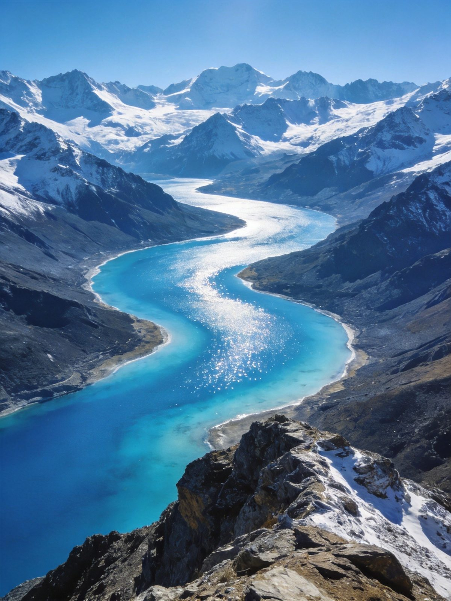
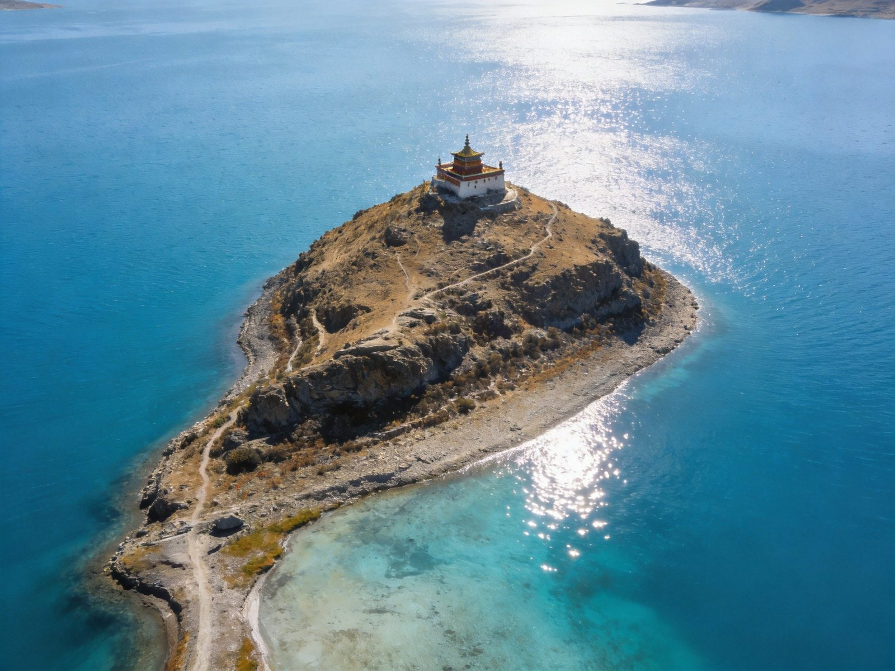
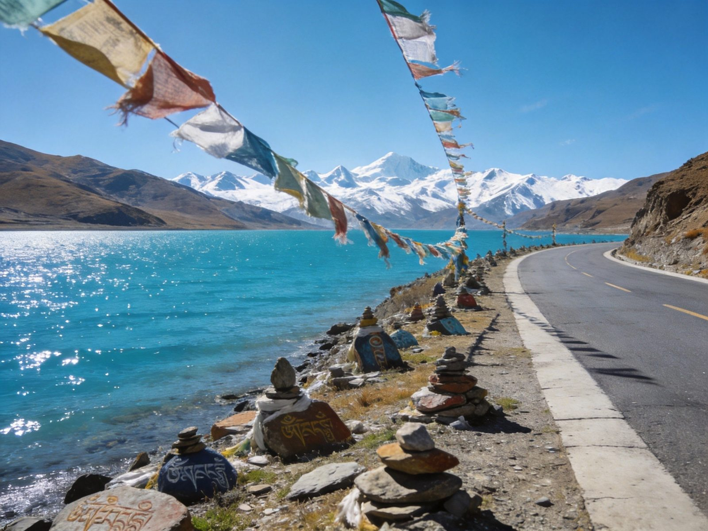

羊卓雍措
仙女遗落的绿松石 · 西藏三大圣湖
羊卓雍措，藏语"天鹅之湖"，海拔 4441 米，西藏三大圣湖之一。离拉萨最近、最容易到达的圣湖，距拉萨约 114 公里，2.5 小时车程。湖体形似珊瑚枝，被雪山环抱，湖水在阳光下由浅碧转深靛。有人说，只去岗巴拉山口拍照只是"照片里的蓝"；绕进去走一段，才是"心里的蓝"。

经典打卡 · 半天往返（适合时间紧）
拉萨出发 → 雅江河谷观景台（藏獒/小羊合影，10-20 元/次）→ 翻越岗巴拉山口（海拔 4790 米，俯瞰羊湖全景，观景台 60 元）。连续发夹弯需谨慎驾驶。
湖边停车区 → 下车近距离接触羊湖，拍照留念。与牦牛/藏獒合影记得先问价（一般 10-20 元）。
原路返回拉萨（约 2.5 小时）。结束。全程约 4-5 小时。
深度环湖 · 一整天（强烈推荐）
拉萨出发 → 岗巴拉山口（拍全景，必到）→ 日托寺（20 元，世界最孤独寺庙，建在半岛山顶，360 度环湖；爬山 15-20 分钟）。
日托寺附近午餐（自带干粮，环湖路无像样餐馆）→ 继续环湖 → 贴湖公路（车离湖水仅几米，只有牛羊和经幡）。
鲁日拉观景台（海拔 5000 米，360 度无死角看羊湖，远处可见日托寺；人少包场；路况差：炮弹坑+碎石路+发夹弯，轿车慎入；有室内餐饮，可喝酥油茶歇脚）→ 张达乡/东拉乡 → 返回拉萨。
核心看点 · 羊湖五景

岗巴拉山口 · 羊湖最经典视角
海拔 4790 米，俯瞰整个羊湖像一条蓝色丝带镶嵌在群山之间。是第一次看到羊湖的震撼点。山口有观景台（60 元）、藏獒/小羊合影点（10-20 元）。中午人多，早到可避开。
📍 浪卡子县 · 观景台 60 元

日托寺 · 世界最孤独的寺庙
建在半岛山顶，四面环湖。门票 20 元，爬山 15-20 分钟。高处 360 度俯瞰羊湖，湖水蓝得像宝石。路上会经过一段贴湖公路，随时停车拍照。
📍 湖中半岛 · 20 元 · 海拔约 4600m
鲁日拉观景台 · 小众秘境
海拔 5000 米，360 度无死角看羊湖，远处能看见日托寺。人少到几乎包场，视野比岗巴拉更开阔。路况差：炮弹坑+碎石路+发夹弯，轿车慎入。有室内餐饮区，可喝酥油茶歇脚。
📍 环湖东路 · 免费 · 建议 SUV
桑丁寺 · 唯一女活佛主持
位于伸入湖中的半岛上，西藏唯一由女性转世活佛（桑顶·多吉帕姆）主持的寺院。寺内供奉空行母化身。Nyingma 与 Kagyu 传统融合。可探索祈祷厅，欣赏湖景。
📍 湖南岸半岛 · 免费（可随喜）
贴湖公路 · 无名段的静
环湖路东拉乡/张达乡段，车离湖水只有几米。没有游客，只有牛羊和经幡。找个湾口停车，坐一会儿——那才是羊湖想给你的样子。
📍 环湖东岸 · 免费 · 轿车可至部分段
怎么去羊湖
| 方式 | 时长 | 参考费用 | 备注 |
|---|---|---|---|
| 拉萨包车往返 | 4-5h | 400-800 元/车 | 最灵活，可环湖 |
| 跟团一日游 | 1 天 | 200-400 元/人 | 拉萨出发，含午餐 |
| 拼车 | 4-5h | 100-200 元/人 | 拉萨旅行社拼车 |
| 自驾 | 2.5h 单程 | 油费自理 | 需中国驾照+入藏证 |
住哪里
必吃什么
预算参考（人均）
| 羊湖门票 | 120 元（2026.3.16 起） |
| 岗巴拉观景台 | 60 元 |
| 日托寺 | 20 元 |
| 包车一日游（4 人分摊） | 100-200 元/人 |
| 餐饮（自备+茶馆） | 50-100 元 |
| 羊卓雍措一日游合计 | 约 350-600 元/人 |
避坑清单
- 高反预防：羊湖海拔 4441m，岗巴拉 4790m，比拉萨高。出发前在拉萨歇够 1-2 天，备好氧气瓶、葡萄糖。
- 防晒拉满：紫外线极强，墨镜、帽子、口罩、高倍防晒霜（SPF50+）必备。
- 保暖必备：山口风巨大，羽绒服/冲锋衣必备；即便夏季也要带够。
- 路况提示：岗巴拉山路段连续发夹弯慢点开；去日托寺/鲁日拉路况差，建议 SUV/越野车，轿车慎入。
- 最佳光线：上午 10 点-下午 3 点湖水最蓝；冬季湖面结冰别样美但路况更差。
- 门票说明：羊湖本身不收门票（2026.3.16 起恢复 120 元/人）；岗巴拉观景台 60 元，日托寺 20 元，鲁日拉免费。
- 自带干粮：环湖路上无像样餐馆，出发前在拉萨用餐并备水/零食。
- 厕所收费：景区厕所都收费，备好零钱。
- 合影先问价：与藏獒/小羊/牦牛合影前先问价（一般 10-20 元）。